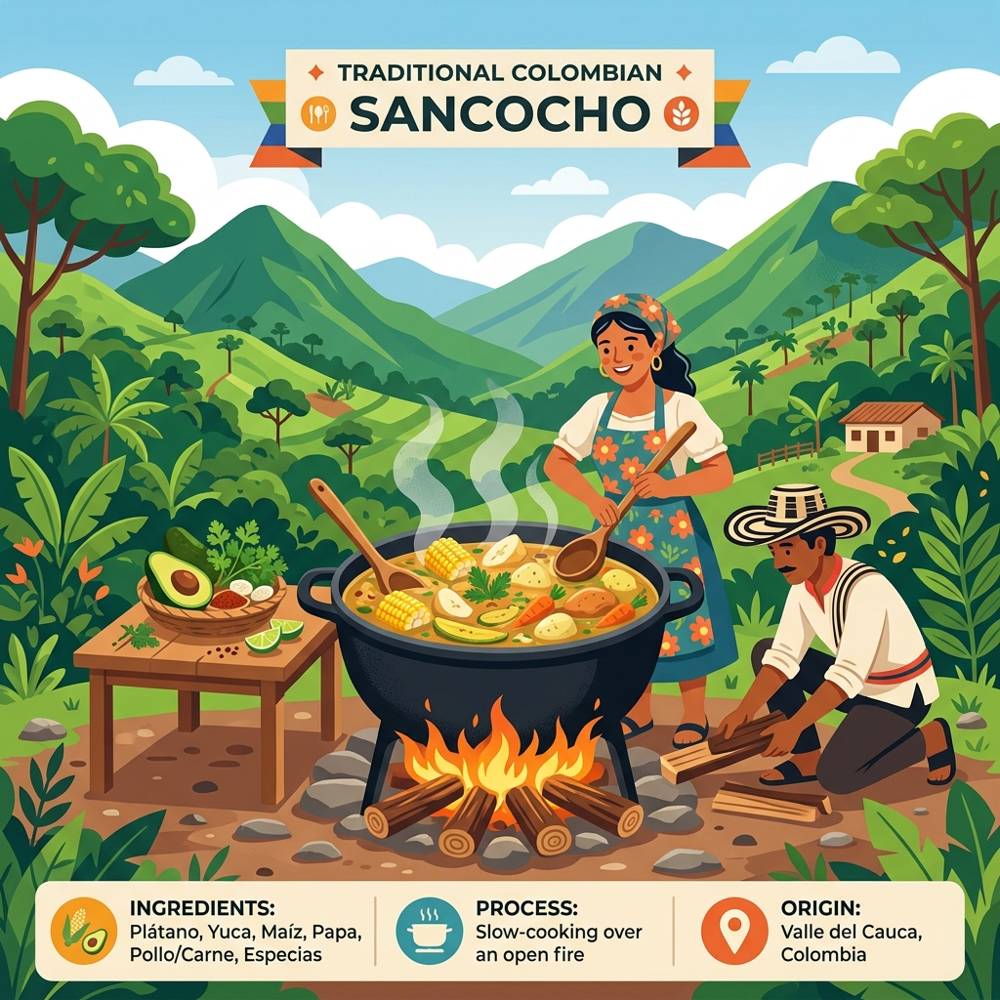
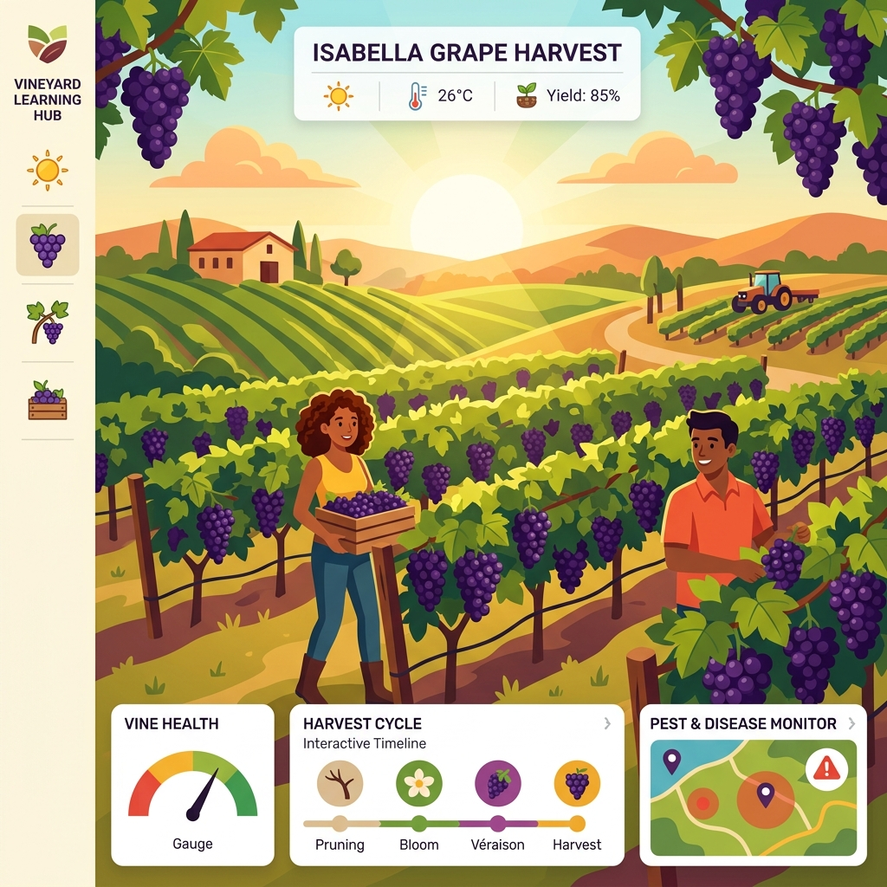

💡 1. Conexión Vital
¡Hola! Bienvenido a tu primera aventura con el pensamiento sistémico. Antes de hablar de código extraño, pensemos en algo completamente cercano y conocido.
Imagina que estás en el parque principal de Ginebra, Valle, y un turista te pregunta cómo preparar un auténtico Sancocho de Gallina en leña. Tú no le dices simplemente "haz el sancocho". Le das una secuencia lógica de pasos ordenados:
- Calentar el agua en la olla.
- Agregar las carnes y hierbas aromáticas.
- Incorporar la papa y la yuca en el momento correcto para que no se deshagan.
- Servir y disfrutar.

🧠 Analogía Visual (DUA): Un algoritmo computacional es exactamente como esa receta paso a paso. Tienes unos Ingredientes (Datos de entrada), un Proceso en la olla (Operaciones matemáticas) y un Plato Final (Datos de salida). ¡Acabas de entender la base de toda la programación del mundo!
🛠️ 2. Caja de Herramientas (Python)
Para que la computadora siga tu "receta", usaremos el lenguaje Python. Es igual de fácil que el español, pero para comunicarnos con máquinas.
📦 Variables
Son como cajas de cartón con una etiqueta afuera. Adentro guardas números o texto para el futuro.
cantidad = 3
📢 print()
El megáfono. Sirve para que la computadora hable y muestre resultados en pantalla.
print(precio_empanada * cantidad)
👂 input()
Las orejas. Escucha lo que tú escribes. Si harás matemáticas, envuélvelo en
int() para que sea número entero.
🧮 Matemáticas
Usamos: Suma +, Resta -, Multiplicación *, División
/.
🎯 3. Modelado (Paso a Paso Tipo Saber 11)
Abordemos un problema clásico de Aritmética y Proporcionalidad muy común en las pruebas ICFES.
El Problema: "Un grupo de amigos cena a $35,000 el plato por persona. Al final de la cuenta, se agrega automáticamente un 10% (0.10) de propina voluntaria al subtotal. ¿Cuál es la expresión para calcular el total a pagar?"
Dividir un gran problema en pedacitos (Pensamiento Computacional):
- Entrada: Preguntar cuántas personas asistirán.
- Proceso: Subtotal =
personas * 35000, Propina =subtotal * 0.10, Total =subtotal + propina. - Salida: Mostrar el valor final.
🚀 4. El Reto: Cosecha de Uva Isabella

Contexto: Un cultivo de uva Isabella en Ginebra ha determinado que por cada 10 metros cuadrados de tierra, recolectan 45 kilogramos de uva. Un comprador grande paga $3,200 por cada kg elaborado.
Misión: Construye un programa donde el agricultor ingrese los metros cuadrados que posee y el sistema le indique cuántos kilogramos producirá y cuánto dinero ganará.
Andamiaje: Completa mentalmente o en tu computador los espacios vacíos
(___) para lograr que funcione.
metros_cuadrados = (("Ingresa metros cuadrados de cultivo: "))
# Si 10m dan 45kg, 1m da 4.5kg
kilos = metros_cuadrados * 4.5
# Calculamos ganancia a $3200 el kilo
dinero = kilos *
print("Tus kilogramos esperados son:")
print()
print("El dinero total a ganar es:")
print()
🧠 5. Bitácora de Reflexión
- ¿Cómo te ayudó separar la lectura en "Entrada, Proceso y Salida" para no confundirte con los datos?
- ¿Por qué obligatoriamente transformamos a número con
int()antes de multiplicar? - Si la inflación cambia el precio de la uva mañana, ¿cuál es la *única* línea del código a modificar?
📚 6. Glosario Traducido
- Algoritmo: Receta paso a paso. Cero magia, cien por ciento lógica en orden.
- Variable: Un lugar en la memoria (una caja) donde guardamos un dato bautizándolo con un nombre claro.
- Sintaxis: La ortografía de la computadora. Olvidar un paréntesis en Python es como faltar una tilde en una carta.